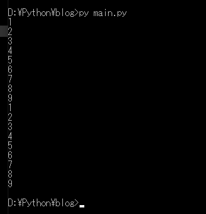
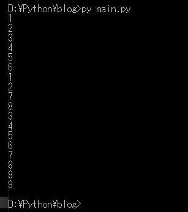
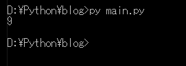
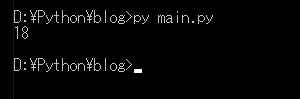

[Python] 17. スレッド(Thread)とロック(lock)、そしてデッドロック(deadlock)
こんにちは。明月です。
この投稿はPythonでスレッド(Thread)とロック(lock)、そしてデッドロック(deadlock)に関する説明です。
スレッドとはプロセスの中で動いている最小の実行単位をスレッドといいます。ただ、このように説明すると何の意味がよく理解できません。
まず、プロセスというのはメモリに割り当てている一つのプログラムということです。プログラムは一つ以上のプロセスを運用することができず、プログラムとは一つのプロセスという意味と同じです。
一つのプロセスは二つ以上のスレッドを運用することができます。簡単に説明するとプロセスで二つ以上のスレッドを同時に実行できる並列処理方法だと思えば良いです。
簡単な例として説明しましょう。
# 関数生成
def example():
# 1から9までの繰り返す。
for i in range(1,10,1):
# コンソールに出力
print(i)
# 関数呼び出す。
example()
# 関数呼び出す。
example()

上の例を見ればexample関数を二回に呼び出しました。example関数で1から9まで繰り返してコンソールに出力します。
当然に始めのexample関数の呼び出しが終わったら次のexample関数の呼び出しに実行することで順番に実行することを確認できます。
でも、私はこの関数を順番ではなく、同時に実行したいです。
つまり始めのexample関数の呼び出しの終了を関係ずに次のexample関数の呼び出ししたいです。
# スレッドを使うためにthreadingモジュールをimportするべきです。
import threading
# 関数生成
def example():
# 1から9までの繰り返す。
for i in range(1,10,1):
# コンソールに出力
print(i)
# targetに関数名を入れてstartをする。
threading.Thread(target=example).start()
threading.Thread(target=example).start()

結果をみれば6から7間に1と2が出力されました。7は2の次にあります。つまりexample関数を二回に呼び出しましたが始めのexample関数が終わる前に二つ目のexample関数が呼び出されたことを確認できます。
このように使ったらThreadの特徴を確認するのが大変です。
今回はQueueを使って様々の作業を同時に処理する例を作って説明します。
# スレッドを使うためにthreadingモジュールをimportするべきです。
# queueを使うためにqueueをimportするべきです。
# timeモジュールはThread上で処理を一時停止する機能がある。
import threading, queue, time
# workでQueueを生成した。
# QueueとはFIFOの構造のデータタイプです。put関数で入れたデータを順番とおりにget関数でデータが出力できる構造だ。
work = queue.Queue()
# generator関数でqueueにパラメータのstartからendまでデータを入れた。
def generator(start, end):
# startからendまで1ずつ繰り返す。
for i in range(start, end, 1):
# workキューにデータをputする。
work.put(i)
# 出力はqueueが空くまで繰り返してデータを取得する。
def display():
# workキューが空かないなら実行
while work.empty() is False:
# workキューからデータを取得
data = work.get()
# コンソールに出力
print("data is " + str(data))
# 1秒単位で一時停止する。
time.sleep(1)
# キュー同期
work.task_done()
# 二つのスレッドに二つの処理を入れた。
# スレッドで関数を呼び出す時、パラメータがargsのパラメータに入れられる。
threading.Thread(target=generator, args = (1,10)).start()
# display関数をスレッドに入れる。
threading.Thread(target=display).start()
# キューが終わると終了
work.join()
上の例をみればキューのtask_doneとjoin関数を使いました。簡単に説明するとキューからget関数でデータを出せば別にカウンターが更新しないです。キューのデータ数を更新する関数がtask_done関数です。
queueの詳細な説明は次のリンクから確認できます。
link - https://docs.python.org/ja/3/library/asyncio-queue.html
joinはキューが空けるまでプロセスを止まる関数です。

一つのリストに複数のスレッドで無差別にデータを入れると、データが失われる場合があります。
# スレッドを使うためにthreadingモジュールをimportするべきです。
# queueを使うためにqueueをimportするべきです。
# timeモジュールはThread上で処理を一時停止する機能がある。
import threading, queue, time
# 変数宣言
data = 0
# 関数生成
def generator(start, end):
# グローバル変数を使う。
global data
# startからendまで繰り返す。
for i in range(start, end, 1):
# buf変数にdata変数のデータを入れる。
buf = data
# 一時停止
time.sleep(0.01)
# data値を一つずつ増加
data = buf + 1
# generator関数を二つのスレッドで実装する。
t1 = threading.Thread(target=generator, args = (1,10))
t2 = threading.Thread(target=generator, args = (1,10))
# スレッド実行
t1.start()
t2.start()
# スレッドが終了するまで待ち
t1.join()
t2.join()
# コンソールに出力
print(data)

確かにgenerator関数を二回に呼び出しします。generator関数は1から9まで繰り返すのでコンソール結果は18を予想できます。でも、結果は9というデータが出ました。
理由は私がわざとエラーを発生するように作りましたが、始めのスレッドでbuf変数にデータを入れて、同時に二つのスレッドでもbuf変数にデータを入れます。
その後、dataにはbufの1を増加するのでこの状況になります。
並列ですが、二つのスレッドを同期したいです。
Pythonでは同期するためにはlockを使うべきです。
# スレッドを使うためにthreadingモジュールをimportするべきです。
# queueを使うためにqueueをimportするべきです。
# timeモジュールはThread上で処理を一時停止する機能がある。
import threading, queue, time
# 変数宣言
data = 0
# スレッドのLockを持ち込む。
lock = threading.Lock()
# 関数生成
def generator(start, end):
# グローバル変数を使う。
global data
# startからendまで繰り返す。
for i in range(start, end, 1):
# lockが設定したら次のlock.acquire関数を呼び出すと一時停止です。
lock.acquire()
# buf変数にdata変数のデータを入れる。
buf = data
# 一時停止
time.sleep(0.01)
# data値を一つずつ増加
data = buf + 1;
# lock使いが終わるとlockを解除
lock.release();
# generator関数を二つのスレッドで実装する。
t1 = threading.Thread(target=generator, args = (1,10))
t2 = threading.Thread(target=generator, args = (1,10))
# スレッド実行
t1.start()
t2.start()
# スレッドが終了するまで待ち
t1.join()
t2.join()
# コンソールに出力
print(data)

予想した結果が出力されました。
lockはスレッド間の並列処理を同期化する機能がありますが、lockを使う時にはいつもデッドロックを気を付けなければならないです。
デッドロックはlockがお互いにロックかけていることです。
# スレッドを使うためにthreadingモジュールをimportするべきです。
# queueを使うためにqueueをimportするべきです。
# timeモジュールはThread上で処理を一時停止する機能がある。
import threading, queue, time
# 変数宣言
data = 0
# スレッドのLockを持ち込む。
lock1 = threading.Lock()
lock2 = threading.Lock()
# 関数生成
def generator1(start, end):
# グローバル変数を使う。
global data
# startからendまで繰り返す。
for i in range(start, end, 1):
# lock1でロックを掛けた。(このステップを過ぎるためにはlock1がrelease状況にならなければならない。)
lock1.acquire()
# lock2でロックを掛けた。(このステップを過ぎるためにはlock2がrelease状況にならなければならない。)
lock2.acquire()
# コンソール出力
print(i)
# 一時停止
time.sleep(0.1)
# lock2を解除
lock2.release()
# lock1を解除
lock1.release()
# 関数生成
def generator2(start, end):
# グローバル変数を使う。
global data
# startからendまで繰り返す。
for i in range(start, end, 1):
# lock2でロックを掛けた。(このステップを過ぎるためにはlock2がrelease状況にならなければならない。)
lock2.acquire()
# lock1でロックを掛けた。(このステップを過ぎるためにはlock1がrelease状況にならなければならない。)
lock1.acquire()
# コンソール出力
print(i)
# 一時停止
time.sleep(0.1)
# lock1を解除
lock1.release()
# lock2を解除
lock2.release()
# generator1関数をスレッドで実装する。
t1 = threading.Thread(target=generator1, args = (1,10))
# generator2関数をスレッドで実装する。
t2 = threading.Thread(target=generator2, args = (1,10))
# スレッド実行
t1.start()
t2.start()
# スレッドが終了するまで待ち
t1.join()
t2.join()
# コンソールに出力
print(data)
上の例はデッドロックの状況です。スレッドでgenerator1関数とgenerator2関数にはお互いにロックが掛けている状況です。
つまりgenerator1でlock1とlock2を掛けていきます。 generator2でlock2とlock1を掛けていきます。
generator1でlock1にロックを掛けてlock2を掛けてステップを過ぎていこうとすればすでにgenerator2でlock2が掛けている状態です。
generator2でlock2にロックを掛けてlock1を掛けてステップを過ぎていこうとすればすでにgenerator1でlock1が掛けている状態です。
つまり、generator1関数ではgenerator2のlock2が解除することを待つ状況だし、generator2関数ではgenerator1のlock1が解除することを待つ状況です。
これがデッドロックです。上の例は、私がわざとデッドロックに掛けるために作ったソースです。実際のプロジェクトでも関数の中に関数の中でlockをかけ、他のところでlockが掛かってデッドロック状態になるケースが多いです。
解決方法はは出来ればlock変数を一つに統一してlockが重ならないようにする方法しかないです。
ここまでPythonでスレッド(Thread)とロック(lock)、そしてデッドロック(deadlock)に関する説明でした。
ご不明なところや間違いところがあればコメントしてください。
- [Python] 21. データベース(mariaDB)を連結する方法2020/06/24 18:51:50
- [Python] 20. stringフォマード(Formatting)と補間法(interpolation)2020/06/23 19:03:21
- [Python] 19. 非同期IOのasync/await(asyncio)を使う方法2020/06/22 18:10:12
- [Python] 18. ネットワーク(Socket)通信する方法2020/06/18 19:53:56
- [Python] 17. スレッド(Thread)とロック(lock)、そしてデッドロック(deadlock)2020/06/18 00:19:45
- [Python] 16. IO(ファイル読み取り、書き込み)を扱う方法2020/06/16 18:37:00
- [Python] 15. クラスを継承する方法2020/06/15 18:20:07
- [Python] 14. クラスプロパティ(Property)2020/06/12 17:45:13
- [Python] 13. クラス関数(class method)とダック・タイピング、そして特殊メソッド2020/06/11 19:42:29
- [Python] 12. クラス(Class)を使う方法2020/06/10 19:33:33
- [Python] 11. デコレーター（Decorator）を使う方法2020/06/09 17:27:18
- [Python] 10. モジュールとパッケージ(import)2020/06/08 19:07:50
- [C#] 49. Operator(演算子)のオーバーロードを使い方2021/10/12 18:28:42
- [C#] 48. IEnumerableとIEnumerator、そしてyieldキーワード2021/10/11 19:49:33
- [C#] 47. Nugetを使い方(外部ライブラリ)とデータベース(MariaDB(Mysql))を使い方、そしてトランザクション(Transaction)2021/10/08 18:58:57
- [Window] MariaDBをインストールする方法2021/10/08 18:56:05
- [C#] 46. データベース(MSSQL)に接続する方法2021/10/07 18:39:58
- [C#] 45. ネットワークソケット通信(Socket)を使い方2021/10/06 19:06:25
- [C#] 44. ファイル(FileInfo)とディレクトリ(DirectoryInfo)を扱い2021/10/05 19:29:34
- [C#] 43. ストリーム(Stream)とバイナリ(byte[])、エンコード(Encoding)、そしてusingを使い方とIDisposableインターフェース2021/10/04 18:33:04
- [C#] 42. ファイルを扱い(IO)とファイルメタデータ(FileInfo)を使い方2021/10/01 20:10:21
- [C#] 41. Taskクラスとasync、awaitを使い方2021/10/01 18:59:14
- [Javascript ] WebのFull calendar(スケジュールカレンダー)の使い方法2021/07/15 21:35:36
- [Java] 56. Web serviceのサーブレット(Servlet)で初期化作業(properties設定)2021/07/02 17:10:36
- [Java] 55. Spring frameworkに文字化けを解決する方法(Encoding設定)2021/06/30 16:37:16
- [Java] 54. Spring frameworkでWeb filterを使う方法2021/06/29 18:25:12
- [Java] 53. ウェブサービス(Web service)でエラーページを処理する方法2021/06/25 13:35:54